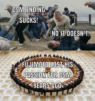

Slashdot reader Kirkman14 writes: A year before the Web opened to the public, Texas entrepreneur Don Lokke was trying to syndicate weekly political cartoons to bulletin board systems. His "telecomics," as he called them, represent an overlooked early experiment in online comics. Lokke launched his main series, "Mack the Mouse" at the height of the 1992 Clinton-Bush-Perot presidential race. His mouse protagonist voiced the frustrations felt by everyday Americans about rising taxes and the recession. Lokke gave away "Mack" for free, but sold subscriptions to his other telecomics, betting sysops would pay for exclusive content. The timing wasn't crazy: enthusiasm for BBSes as an industry was surging, with conferences like ONE BBSCON promoting "BBSing for profit." But the Web soon deflated those hopes, and Lokke left BBSes behind in 1995. Decades later, about half of his nearly 300 telecomics were recovered and preserved on 16colors.
Read more of this story at Slashdot.
MarketWatch looks at "surveillance wages," pay rates "based not on an employee's performance or seniority, but on formulas that use their personal data, often collected without employees' knowledge."
According to Nina DiSalvo, policy director at labor advocacy group Towards Justice, some systems use signals associated with financial vulnerability — including data on whether a prospective employee has taken out a payday loan or has a high credit-card balance — to infer the lowest pay a candidate might accept. Companies can also scrape candidates' public personal social-media pages, she said...
A first-of-its-kind audit of 500 labor-management artificial-intelligence companies by Veena Dubal, a law professor at University of California, Irvine, and Wilneida Negrón, a tech strategist, found that employers in the healthcare, customer service, logistics and retail industries are customers of vendors whose tools are designed to enable this practice. Published by the Washington Center for Equitable Growth, a progressive economic think tank, the August 2025 report... does not claim that all employers using these systems engage in algorithmic wage surveillance. Instead, it warns that the growing use of algorithmic tools to analyze workers' personal data can enable pay practices that prioritize cost-cutting over transparency or fairness...
Surveillance wages don't stop at the hiring stage — they follow workers onto the job, too. The vendors that provide such services also offer tools that are built to set bonus or incentive compensation, according to the report. These tools track their productivity, customer interactions and real-time behavior — including, in some cases, audio and video surveillance on the job. Nearly 70% of companies with more than 500 employees were already using employee-monitoring systems in 2022, such as software that monitors computer activity, according to a survey from the International Data Corporation. "The data that they have about you may allow an algorithmic decision system to make assumptions about how much, how big of an incentive, they need to give to a particular worker to generate the behavioral response they seek," DiSalvo said.
The article notes that Colorado introduced the "Prohibit Surveillance Data to Set Prices and Wages Act" to ban companies from setting pay rates with algorithms that use payday-loan history, location data or Google search behavior for algorithmically set.
Thanks to long-time Slashdot reader sinij for sharing the article.
Read more of this story at Slashdot.
Anthropic's making a big and sudden change — and connecting its Claude AI to third-party agentic tools "is about to get a lot more expensive," writes the Verge:
Beginning April 4th at 3PM ET, users will "no longer be able to use your Claude subscription limits for third-party harnesses including OpenClaw," according to an email sent to users on Friday evening. Instead, if users want to use OpenClaw with Claude, they'll have to use a "pay-as-you-go option" that will be billed separate from their Claude subscription.
Anthropic's announcement added these extra usage bundles are "now available at a discount." Users can also try Anthropic's API, notes VentureBeat, "which charges for every token of usage rather than allowing for open-ended usage up to certain limits, as the Pro and Max plans have allowed so far. "
The technical reality, according to Anthropic, is that its first-party tools like Claude Code, its AI vibe coding harness, and Claude Cowork, its business app interfacing and control tool, are built to maximize "prompt cache hit rates" — reusing previously processed text to save on compute. Third-party harnesses like OpenClaw often bypass these efficiencies... [Claude Code creator Boris Cherny explained on X that "I did put up a few PRs to improve prompt cache hit rate for OpenClaw in particular, which should help for folks using it with Claude via API/overages."] Growth marketer Aakash Gupta observed on X that the "all-you-can-eat buffet just closed," noting that a single OpenClaw agent running for one day could burn $1,000 to $5,000 in API costs. "Anthropic was eating that difference on every user who routed through a third-party harness," Gupta wrote. "That's the pace of a company watching its margin evaporate in real time."
However, Peter Steinberger, the creator of OpenClaw who was recently hired by OpenAI, took a more skeptical view of the "capacity" argument."Funny how timings match up," Steinberger posted on X. "First they copy some popular features into their closed harness, then they lock out open source." Indeed, Anthropic recently added some of the same capabilities that helped OpenClaw catch-on — such as the ability to message agents through external services like Discord and Telegram — to Claude Code...
User @ashen_one, founder of Telaga Charity, voiced a concern likely shared by other small-scale builders: "If I switch both [OpenClaw instances] to an API key or the extra usage you're recommending here, it's going to be far too expensive to make it worth using. I'll probably have to switch over to a different model at this point."
"I know it sucks," Cherny replied. "Fundamentally engineering is about tradeoffs, and one of the things we do to serve a lot of customers is optimize the way subscriptions work to serve as many people as possible with the best mode..." OpenAI appears to be positioning itself as a more "harness-friendly" alternative, potentially using this moment as a customer acquisition channel for disgruntled Claude power users.
By restricting subscription limits to their own "closed harness," Anthropic is asserting control over the UI/UX layer. This allows them to collect telemetry and manage rate limits more granularly, but it risks alienating the power-user community that built the "agentic" ecosystem in the first place. Anthropic's decision is a cold calculation of margins versus growth. As Cherny noted, "Capacity is a resource we manage thoughtfully." In the 2026 AI landscape, the era of subsidized, unlimited compute for third-party automation is over. For the average user on Claude.ai, the experience remains unchanged; for the power users running autonomous offices, the bell has tolled.
Read more of this story at Slashdot.
Amazon "must negotiate with a labor union representing some 5,000 workers at a company warehouse on Staten Island," reports Reuters, citing a ruling Wednesday from America's National Labor Relations Board (NLRB).
The union formed in 2022, according to the article, and "has been seeking to negotiate with Amazon over pay, working conditions and other matters."
The NLRB said in its ruling that Amazon "has engaged in unfair labor practices" by refusing to bargain with the labor group or to recognize its legitimacy... Amazon said on Thursday it disagreed with the NLRB's ruling. "Representatives of the NLRB improperly influenced this election," the company said in a statement, suggesting it planned to appeal. "We're confident an unbiased court will overturn the original certification, and we look forward to the opportunity for our team to fairly voice their opinions." An appeal would likely preclude Amazon from having to comply with the NLRB's order while it makes its way through the courts...
Related to the Staten Island case, Amazon has argued that the NLRB itself is unconstitutional and sued to block the agency from ruling on it. The matter is still pending.
After forming independently, that union "has since aligned with the International Brotherhood of Teamsters," the article points out. The Teamsters represent 1.3 million American workers, according to a statement they issued this week, which also includes this quote from the president of Amazon Labor Union-e Local 1. "We are making history at Amazon, and we are doing it through undiluted worker power..."
Their statement adds that the ruling "came only one day after the union announced another historic victory that upheld Amazon Teamsters' right to strike."
Read more of this story at Slashdot.
"Hackers briefly turned a widely trusted developer tool into a vehicle for credential-stealing malware that could give attackers ongoing access to infected systems," the news site Axios.com reported Tuesday, citing security researchers at Google.
The compromised package — also named axios — simplifies HTTP requests, and reportedly receives millions of downloads each day:
The malicious versions were removed within roughly three hours of being published, but Google warned the incident could have "far-reaching impacts" given the package's widespread use, according to John Hultquist, chief analyst at Google Threat Intelligence Group. Wiz estimates Axios is downloaded roughly 100 million times per week and is present in about 80% of cloud and code environments. So far, Wiz has observed the malicious versions in roughly 3% of the environments it has scanned.
Friday PCMag notes the maintainer's compromised account had two-factor authentication enabled, with the breach ultimately traced "to an elaborate AI deepfake from suspected North Korean hackers that was convincing enough to trick a developer into installing malware," according to a post-mortem published Thursday by lead developer Jason Saayman:
[Saayman] fell for a scheme from a North Korean hacking group, dubbed UNC1069, which involves sending out phishing messages and then hosting virtual meetings that use AI deepfakes to clone the face and voices of real executives. The virtual meetings will then create the impression of an audio problem, which can only be "solved" if the victim installs some software or runs a troubleshooting command. In reality, it's an effort to execute malware. The North Koreans have been using the tactic repeatedly, whether it be to phish cryptocurrency firms or to secure jobs from IT companies.
Saayman said he faced a similar playbook. "They reached out masquerading as the founder of a company, they had cloned the company's founders likeness as well as the company itself," he wrote. "They then invited me to a real Slack workspace. This workspace was branded... The Slack was thought out very well, they had channels where they were sharing LinkedIn posts. The LinkedIn posts I presume just went to the real company's account, but it was super convincing etc." The hackers then invited him to a virtual meeting on Microsoft Teams. "The meeting had what seemed to be a group of people that were involved. The meeting said something on my system was out of date. I installed the missing item as I presumed it was something to do with Teams, and this was the remote access Trojan," he added. "Everything was extremely well coordinated, looked legit and was done in a professional manner."
Friday developer security platform Socket wrote that several more maintainers in the Node.js ecosystem "have come out of the woodwork to report that they were targeted by the same social engineering campaign."
The accounts now span some of the most widely depended-upon packages in the npm registry and Node.js core itself, and together they confirm that axios was not a one-off target. It was part of a coordinated, scalable attack pattern aimed at high-trust, high-impact open source maintainers. Attackers also targeted several Socket engineers, including CEO Feross Aboukhadijeh. Feross is the creator of WebTorrent, StandardJS, buffer, and dozens of widely used npm packages with billions of downloads... Commenting on the axios post-mortem thread, he noted that this type of targeting [against individual maintainers] is no longer unusual... "We're seeing them across the ecosystem and they're only accelerating."
Jordan Harband, John-David Dalton, and other Socket engineers also confirmed they were targeted. Harband, a TC39 member, maintains hundreds of ECMAScript polyfills and shims that are foundational to the JavaScript ecosystem. Dalton is the creator of Lodash, which sees more than 137 million weekly downloads on npm. Between them, the packages they maintain are downloaded billions of times each month. Wes Todd, an Express TC member and member of the Node Package Maintenance Working Group, also confirmed he was targeted. Matteo Collina, co-founder and CTO of Platformatic, Node.js Technical Steering Committee Chair, and lead maintainer of Fastify, Pino, and Undici, disclosed on April 2 that he was also targeted. His packages also see billion downloads per year... Scott Motte, creator of dotenv, the package used by virtually every Node.js project that handles environment variables, with more than 114 million weekly downloads, also confirmed he was targeted using the same Openfort persona.
Socket reports that another maintainer was targetted with an invitation to appear on a podcast. (During the recording a suspicious technical issue appeared which required a software fix to resolve....)
Even just technical implementation, "This is among the most operationally sophisticated supply chain attacks ever documented against a top-10 npm package," the CI/CD security company StepSecurity wrote Tuesday
The dropper contacts a live command-and-control server, delivers separate second-stage payloads for macOS, Windows, and Linux, then erases itself and replaces its own package.json with a clean decoy... Three payloads were pre-built for three operating systems. Both release branches were poisoned within 39 minutes of each other. Every artifact was designed to self-destruct. Within two seconds of npm install, the malware was already calling home to the attacker's server before npm had even finished resolving dependencies... Both versions were published using the compromised npm credentials of a lead axios maintainer, bypassing the project's normal GitHub Actions CI/CD pipeline.
"As preventive steps, Saayman has now outlined several changes," reports The Hacker News, "including resetting all devices and credentials, setting up immutable releases, adopting OIDC flow for publishing, and updating GitHub Actions to adopt best practices."
The Wall Street Journal called it "the latest in a string of incidents exposing risks in the systems that underpin how modern software is built."
Read more of this story at Slashdot.
Nine days ago Microsoft released a non-security "preview" update for Windows 11 — not mandatory for the average Windows user, notes ZDNet, "but rather as optional, more for IT admins and power users who want to test them."
TechRepublic adds that the update "was to bring 'production-ready improvements' and generally ensure system stability by optimizing different Windows services." So it's ironic that some (but not all) users reported instead that the update "blocks users at the door, refusing to install or crashing midway through the process."
"It apparently impacted enough people to force Microsoft to take action," writes ZDNet. "Microsoft paused and then pulled the update," and then Tuesday released a new update "designed to replace the glitchy one. This one includes all the new features and improvements from the previous preview update, but also fixes the installation issues that clobbered that update."
Meanwhile, as Windows 11 version 24H2 approaches its end of life this October, Microsoft is now force-updating users to the latest version, reports BleepingComputer:
"The machine learning-based intelligent rollout has expanded to all devices running Home and Pro editions of Windows 11, version 24H2 that are not managed by IT departments," Microsoft said in a Monday update to the Windows release health dashboard... "No action is required, and you can choose when to restart your device or postpone the update."
Neowin reports:
The good news is that the update from version 24H2 to 25H2 is a minor enablement package, as the two operating systems share the same codebase. As such, the update won't take long, and you should not encounter any disruptions, compatibility issues, or previously unseen bugs... Microsoft recently promised to implement big changes in how Windows Update works, including the ability to postpone updates for as long as you want. However, Microsoft has yet to clarify if that includes staying on a release beyond its support period.
Thanks to long-time Slashdot reader Ol Olsoc for sharing the news.
Read more of this story at Slashdot.
A former U.S. spy spoke to The New Yorker about "years of clandestine work for the C.I.A. — which, he said, had 'prevented Iran from getting a nuke'."
[Kevin] Chalker told me that, as he understood it, the Pentagon had suggested running commando operations to kill key Iranian scientists, as Israel subsequently did. But the C.I.A. proposed recruiting those scientists to defect, as U.S. spies had once courted Soviet physicists. Chalker paraphrased the agency's pitch: "We can debrief them and learn so much more — and, if they say no, then you can kill them." (A more senior agency official confirmed the broad strokes of his account.) The White House liked the agency's idea, and [president George W.] Bush authorized the C.I.A. to conduct clandestine operations to stop Iran from building a bomb. The C.I.A. program that Chalker described to me became publicly known in 2007, when the Los Angeles Times reported on the existence of an agency project called Brain Drain. But the details of the "invitations" to Iranian scientists have not previously been reported...
Chalker typically had about ten minutes to explain, as gently as possible, that he was from the C.I.A., that he had the power to secure the scientist and his family a comfortable new life in the U.S. — and that, if the offer was rejected, the scientist, regrettably, would be assassinated. (Chalker tried to emphasize the happier potential outcome.) Killing a civilian scientist would violate international law. The American government has denied ever doing it, and I found no evidence that the U.S. has carried out any such murders. A former senior agency official familiar with the Brain Drain project told me all that mattered was that Iranian scientists had believed they would be killed, regardless of whether the U.S. actually made good on the threat. And Israel had been conducting a campaign to assassinate Iranian scientists, which made the prospect of lethal reprisal highly plausible. Other former officials with knowledge of the project told me that the C.I.A. sometimes shared intelligence with Mossad which enabled its operatives to locate and kill a scientist. Such information exchanges were kept vague enough to preserve deniability if a more legalistic U.S. Administration later took office...
[Chalker] is confident that those who rebuffed him were, in fact, killed — one way or another... One of Chalker's colleagues told me that, against the backdrop of so many Israeli assassinations, Chalker's interactions with Iranian scientists could almost be considered humanitarian — he had been "throwing them a lifeline." Of the many scientists he approached, three-quarters ultimately agreed to coöperate.
Their 10,000-word article suggests Chalker may now be resentful the CIA didn't help him in a later unrelated lawsuit, noting it's "nearly unheard of for ex-spies to divulge their past activities."
But Chalker also says he "helped obtain pivotal information that laid the groundwork for more than a decade of American efforts to disrupt the Iranian nuclear-weapons program, from the Stuxnet cyberattacks, which occurred around 2010 [destroying 1,000 uranium-enriching centrifuges], to the Obama Administration's nuclear deal, in 2015, to the U.S. air strikes on Iranian atomic-energy facilities in the summer of 2025."
Read more of this story at Slashdot.
"The April 1st timing should have been your first clue," writes Gadget Review. TechSpot's false story was just an April Fool's prank — although Gadget Review thinks it's still funny how "something about this particular piece of satire felt uncomfortably plausible."
Maybe it's because AMD stock sits around $196 while Intel hovers near $41, or perhaps it's the poetic justice of the underdog finally eating the giant. The semiconductor world has witnessed stranger reversals, but none quite this dramatic. Your gaming rig's CPU battle represents decades of corporate warfare, legal grudges, and technological leapfrogging that makes Game of Thrones look like a friendly board game.
Picture this: In 1975, AMD reverse-engineered Intel's 8080 processor, creating the Am9080 clone. The audacity was breathtaking — AMD spent 50 cents per chip to manufacture something they sold for $700. That's a 1,400% markup on borrowed technology, making today's GPU prices look reasonable. This relationship evolved from copying to partnership to bitter rivalry. The companies signed second-sourcing deals in the late 1970s, with AMD becoming Intel's official backup supplier. Then came the lawsuits. AMD sued Intel for antitrust violations in 2005, eventually settling for $1.25 billion in 2009. That settlement money helped fund the Ryzen revolution that's currently eating Intel's lunch. The historical irony runs deeper than your typical tech rivalry. AMD literally started as Intel's shadow, creating chips by studying Intel's designs under microscopes. Today, Intel engineers probably study AMD's Zen architecture the same way...
This April Fool's joke works because it captures something true about power shifts in technology.
The site TipRanks notes that both companies saw their stock price rise Wednesday, though that might not be related to the false article. "Positive analyst coverage from Wells Fargo could be acting as a catalyst for AMD stock today. Intel also announced plans to buy back its 49% equity interest in a joint venture with Apollo Global Management APO."
Read more of this story at Slashdot.
Long-time GNOME/OpenOffice.org/LibreOffice contributor
Michael Meeks is now general manager of Collabora Productivity. And earlier this month he complained when LibreOffice decided to bring back its LibreOffice Online project, as reported by Neowin, which had been inactive since 2022. After the original project went dormant — to which Collabora was a major contributor — they forked the code and created their own product, Collabora Online.
But this week Meeks blogged about even more changes, writing that the Document Foundation (the nonprofit behind LibreOffice) "has decided to eject from membership all Collabora staff and partners.
That includes over thirty people who have contributed faithfully to LibreOffice for many years." Meeks argues the ejections were "based on unproven legal concerns and guilt by association."
This includes seven of the top ten core committers of all time (excluding release engineers) currently working for Collabora Productivity. The move is the culmination of TDF losing a large number of founders from membership over the last few years with: Thorsten Behrens, Jan 'Kendy' Holesovsky, Rene Engelhard, Caolan McNamara, Michael Meeks, Cor Nouws and Italo Vignoli no longer members. Of the remaining active founders, three of the last four are paid TDF staff (of whom none are programming on the core code).
The blog It's FOSS calls it "LibreOffice Drama." They've confirmed the removals happened, also noting recently adopted Community Bylaws requiring members to step down if they're affiliated with a company in an active legal dispute with the Foundation. But The Documentation Foundation "also makes clear that a membership revocation is not a ban from contributing, with the project remaining open to anyone, and expects Collabora to keep contributing 'when the time comes.'"
Collabora's Meeks adds in his blog post that there's "bold and ongoing plans to create an entirely new, cut-down, differentiated Collabora Office for users that is smoother, more user friendly, and less feature dense than our Classic product (which will continue to be supported for years for our partners).
This gives a chance to innovate faster in a separate place on a smaller, more focused code-base with fewer build configurations, much less legacy, no Java, no database, web-based toolkit and more. We are excited to get executing on that.
To make this process easier, and to put to bed complaints about having our distro branches in TDF gerrit [for code review], and to move to self-hosted FOSS tooling we are launching our own gerrit to host our existing branch of core...
We will continue to make contributions to LibreOffice where that makes sense (if we are welcome to), but it clearly no longer makes much sense to continue investing heavily in building what remains of TDF's community and product for them — while being excluded from its governance. In this regard, we seem to be back where we were fifteen years ago.
Read more of this story at Slashdot.
An anonymous reader quotes a report from Ars Technica: When it comes to large language model-powered tools, there are generally two broad categories of users. On one side are those who treat AI as a powerful but sometimes faulty service that needs careful human oversight and review to detect reasoning or factual flaws in responses. On the other side are those who routinely outsource their critical thinking to what they see as an all-knowing machine. Recent research goes a long way to forming a new psychological framework for that second group, which regularly engages in "cognitive surrender" to AI's seemingly authoritative answers. That research also provides some experimental examination of when and why people are willing to outsource their critical thinking to AI, and how factors like time pressure and external incentives can affect that decision.
Overall, across 1,372 participants and over 9,500 individual trials, the researchers found subjects were willing to accept faulty AI reasoning a whopping 73.2 percent of the time, while only overruling it 19.7 percent of the time. The researchers say this "demonstrate[s] that people readily incorporate AI-generated outputs into their decision-making processes, often with minimal friction or skepticism." In general, "fluent, confident outputs [are treated] as epistemically authoritative, lowering the threshold for scrutiny and attenuating the meta-cognitive signals that would ordinarily route a response to deliberation," they write. These kinds of effects weren't uniform across all test subjects, though. Those who scored highly on separate measures of so-called fluid IQ were less likely to rely on the AI for help and were more likely to overrule a faulty AI when it was consulted. Those predisposed to see AI as authoritative in a survey, on the other hand, were much more likely to be led astray by faulty AI-provided answers.
Despite the results, though, the researchers point out that "cognitive surrender is not inherently irrational." While relying on an LLM that's wrong half the time (as in these experiments) has obvious downsides, a "statistically superior system" could plausibly give better-than-human results in domains such as "probabilistic settings, risk assessment, or extensive data," the researchers suggest. "As reliance increases, performance tracks AI quality," the researchers write, "rising when accurate and falling when faulty, illustrating the promises of superintelligence and exposing a structural vulnerability of cognitive surrender." In other words, letting an AI do your reasoning means your reasoning is only ever going to be as good as that AI system. As always, let the prompter beware.
Read more of this story at Slashdot.
Colorado is rolling out an average-speed camera system that tracks vehicles across multiple points instead of catching them at a single camera, making it much harder for drivers to dodge tickets with apps like Waze and Radarbot. Motor1 reports: The state's new automated vehicle identification systems (AVIS) use several cameras to calculate your average speed between them, and if it is 10 miles per hour or more over the limit, you get a ticket. No longer will you be able to slow down as you approach a camera and speed back up after passing it, not that you should be speeding on public roads in the first place.
Colorado began deploying this new camera system after legislators changed the law in 2023, allowing AVIS for law enforcement use. The systems, installed on various roads and highways throughout the state, first began issuing warnings, but police began issuing tickets late last year.
The most recent section of road to fall under surveillance is a stretch of I-25 north of Denver, which brought the state's growing panopticon to our attention. It began issuing tickets on April 2. The Colorado Department of Transportation installed the cameras along a construction zone. The fine is $75 and zero points for exceeding the speed limit, and the police issue it to the vehicle's owner, regardless of who is driving.
Read more of this story at Slashdot.
The Artemis II crew has passed 100,000 miles from Earth and is now on a "free-return" path around the moon after a successful "translunar" injection burn. "Ladies and gentlemen, I am so, so excited to be able to tell you that for the first time since 1972 during Apollo 17, human beings have left Earth orbit," NASA's Dr Lori Glaze told a news conference. The Guardian reports: The astronauts -- the Americans Reid Wiseman, Victor Glover and Christina Koch, and a Canadian, Jeremy Hansen -- spent their first day in space performing checks on the spacecraft, which had never carried humans before. Later they had time to speak to US TV networks. "I've got to tell you, there is nothing normal about this," Wiseman told ABC News from the cramped interior of the capsule. "Sending four humans 250,000 miles away is a herculean effort, and we are now just realising the gravity of that."
Orion will travel about 4,000 miles (6,400km) beyond the moon before turning back, providing unprecedented and illuminated views of the lunar far side. If all proceeds smoothly, the astronauts will set a record by venturing farther from Earth than any human before -- more than 250,000 miles. The mission is part of a longer-term plan to repeatedly return to the moon, with the aim of establishing a permanent base that will offer a platform for further exploration. After the final engine burn, NASA said Wiseman took two "spectacular" images of Earth.
The first photo, called Hello, World, "shows the vast expanse of blue that is the Atlantic Ocean, framed by a thin glow of the atmosphere as the Earth eclipses the Sun and green auroras at either pole," reports the BBC. Another photo shows the view of Earth from inside the Orion spacecraft.
Read more of this story at Slashdot.
"Consumer PC parts aren't the only things being gobbled up by the 'AI' industry," writes PCWorld's Michael Crider. "A Starcraft-inspired strategy game is shutting down its multiplayer servers because the hosting company got bought out for 'AI.'" The game will still be playable offline for now, but the shutdown highlights the ripple effects of the AI boom on the gaming industry. Amid the ongoing hardware shortages, AI companies are basically gobbling up as much infrastructure as they can to repurpose it for AI workloads. From the report: The game in question is Stormgate, a crowdfunded revival of the real-time strategy genre that has languished in the last decade or so. The developer Frost Giant Studios told its players on Discord (spotted by PC Gamer) that it would be unable to continue multiplayer access past the end of this month. The "game server orchestration partner" was bought by an AI company -- the developer's words, not mine -- which means that the multiplayer aspects of the game will have a "planned outage."
The devs say the game will be patched for offline play, presumably including its single-player campaign mode and co-op modes, but "online modes will not be available at that point." They're hoping to bring back online play in a later update, but that'll depend on "finding a partner to support ongoing operations." That sounds like old-fashioned player-hosted games with lobbies aren't in the cards, at least not yet.
Frost Giant's server provider is Hathora, which was bought by a company called Fireworks AI last month. Fireworks describes its offerings as "open-source AI models at blazing speed, optimized for your use case, scaled globally with the Fireworks Inference Cloud." So, yeah, Hathora's infrastructure will likely be used for yet more generative "AI." And according to GamesBeat, it's planning to shut down the game service aspect of its company completely. That means Stormgate probably isn't going to be the last game affected. Hathora also provides online services for Splitgate 2, among others. I'm contacting Hathora for comment and will update this story if I receive a response.
Read more of this story at Slashdot.
Iranian strikes have reportedly knocked out key AWS availability zones in Bahrain and Dubai, leaving parts of both regions effectively offline for an extended period and forcing Amazon to urge teams and customers to shift workloads elsewhere. "These two regions continue to be impaired, and services should not expect to be operating with normal levels of redundancy and resiliency," an internal Amazon communication memo reads. "We are actively working to free and reserve as much capacity as possible in the region for customers, and services should be scaled to the minimal footprint required to support customer migration." Big Technology reports: With the war now nearing its sixth week, Iran has made Amazon infrastructure in the Gulf an economic target and is now eyeing its peers. Amazon's Bahrain facilities have been hit multiple times, including a Wednesday strike that caused a fire. And its facilities in the UAE also sustained multiple hits. The IRGC is threatening multiple other U.S. tech giants, including Microsoft, Google, and Apple.
Amazons infrastructure in Bahrain and Dubai each have three 'availability zones' or clusters of compute. Both Bahrain and Dubai have a zones that are "hard down" and and "impaired but functioning," per the internal communication. "We do not have a timeline for when DXB and BAH will return to normal operations," the internal post said.
Read more of this story at Slashdot.
Microsoft plans to invest $10 billion in Japan from 2026 to 2029 to expand AI infrastructure, boost local cloud capacity, train 1 million engineers and developers, and deepen cybersecurity cooperation with the Japanese government. Reuters reports: The investment includes the training of 1 million engineers and developers by 2030, Microsoft said, which was unveiled during a visit to Tokyo by Vice Chair and President Brad Smith. In a statement, the company said the plan aligns with Prime Minister Sanae Takaichi's goal to boost growth through advanced, strategic technologies while safeguarding national security.
Microsoft will work with domestic firms including SoftBank and Sakura Internet to expand Japan-based AI computing capacity, allowing Ecompanies and government agencies to keep sensitive data within the country while accessing Microsoft Azure services, it said. It will also deepen cooperation with Japanese authorities on sharing intelligence related to cyber threats and crime prevention.
Read more of this story at Slashdot.
Jowi Morales / Tom's Hardware : According to Microsoft Copilot Terms of Use, updated in Oct. 2025, “Copilot is for entertainment purposes only” and “Don't rely on Copilot for important advice” — These might be boilerplate disclaimers, but they kind of contradict the company's ads and marketing.
Abner Li / 9to5Google : Samsung plans to discontinue its Messages app in the US in July 2026 and offers instructions for users on older Android versions to switch to Google Messages — Samsung has shared an “End of Service Announcement” for its Messages app in the US. Set for July 2026, Google Messages …
Financial Times : Sources: the UK has stepped up its efforts to get Anthropic to expand in the country, including a dual listing proposal, after Anthropic's clash with the US DOD — Keir Starmer's government steps up efforts to get American AI start-up to grow its presence in Britain
Ismail Shakil / Reuters : US commercial satellite provider Planet Labs is indefinitely withholding access to imagery of Iran and the conflict region, citing US government's request — Satellite imaging firm Planet Labs said on Saturday it will indefinitely withhold visuals of Iran and the region of conflict …
Sam Clark / Politico : EU legislation allowing voluntary CSAM scanning by tech and social media companies expired April 3 after lawmakers failed to agree on the terms of an extension — Scanning private online spaces for child abuse material becomes illegal in Europe on Saturday.
New York Times : How some teens use popular AI-powered role-playing chatbots, and the high-stakes challenge for parents to understand their potentially addictive impact — When Quentin was 13, he kept seeing ads on YouTube for Talkie, an app with “countless A.I.s eager to speak with you.”
Munsif Vengattil / Reuters : How India's film industry is embracing AI, as studios use the tech to cut production time and costs, while union rules constrain its use in Hollywood — India's studios are transforming filmmaking by using AI to slash production time, cut costs and dub movies into numerous languages.
AppleInsider : Apple reportedly signed a 3rd-party driver, by Tiny Corp, for AMD or Nvidia eGPUs for Apple Silicon Macs; it's meant for AI research, not accelerating graphics — Apple has signed a driver for AMD or Nvidia eGPUs connected to Apple Silicon but there are some big caveats, and it won't improve your graphics.
Kyle Orland / Ars Technica : Research across 1,372 participants and 9K+ trials details “cognitive surrender”, where most subjects had minimal AI skepticism and accepted faulty AI reasoning — When it comes to large language model-powered tools, there are generally two broad categories of users.
Kate Clark / Wall Street Journal : VCs are covering expenses like rent for young college dropouts founding AI startups; Antler: average AI unicorn founder age fell from 40 in 2020 to 29 in 2024 — Venture capitalists are stepping in to cover expenses like rent while dropouts from Harvard to Stanford chase their startup dreams
The Economic Times : Y Combinator appears to have dropped Delve, removing the company's profile from its startup directory, following allegations of fake compliance certificates — Delve's removal from Y Combinator's directory follows allegations that compliance certifications for hundreds of Delve's clients were fabricated.
Anthony Halpin / Bloomberg : Russian media says attempts to limit VPN use may have triggered a widespread banking outage, as Moscow intensifies a crackdown on internet use and Telegram — Russia's attempts to restrict the use of virtual private networks amid a clampdown on the Telegram messaging platform triggered …
Lenny Rachitsky / Lenny's Newsletter : Q&A with Simon Willison on the November release of GPT-5.1 and Opus 4.5 as the inflection point for coding, exhaustion due to managing coding agents, and more — Simon Willison is a prolific independent software developer, a blogger, and one of the most visible and trusted voices on the impact AI is having on builders.
Robert McMillan / Wall Street Journal : A profile of Benjamin Brundage, a 22-year-old college senior who helped uncover the Kimwolf botnet, which launched 26,000+ DDoS attacks targeting 8,000+ victims — A flurry of powerful attacks had internet experts baffled. Benjamin Brundage had a few tricks to help solve the mystery.
Politico : The White House's latest effort to enact legislation that would preempt state AI laws stalls as multiple Democrats dismiss the proposal as a partisan play — The resistance on Capitol Hill raises fresh doubts about whether Congress can pass any national laws for the rapidly advancing technology as states move ahead on their own.